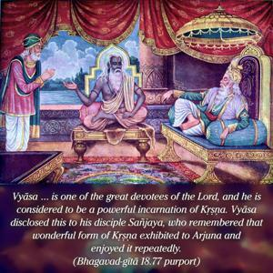

O King, as I remember the wonderful form of Lord Kṛṣṇa, I am struck with wonder more and more, and I rejoice again and again.

It appears that Sañjaya also, by the grace of Vyāsa, could see the universal form Kṛṣṇa exhibited to Arjuna. It is, of course, said that Lord Kṛṣṇa had never exhibited such a form before. It was exhibited to Arjuna only, yet some great devotees could also see the universal form of Kṛṣṇa when it was shown to Arjuna, and Vyāsa was one of them. He is one of the great devotees of the Lord, and he is considered to be a powerful incarnation of Kṛṣṇa. Vyāsa disclosed this to his disciple Sañjaya, who remembered that wonderful form of Kṛṣṇa exhibited to Arjuna and enjoyed it repeatedly.